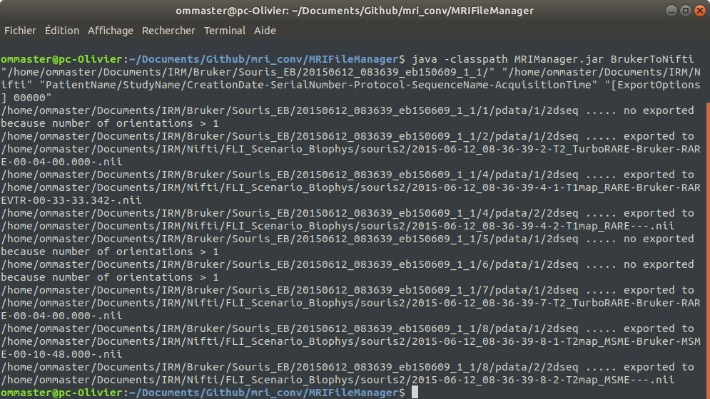
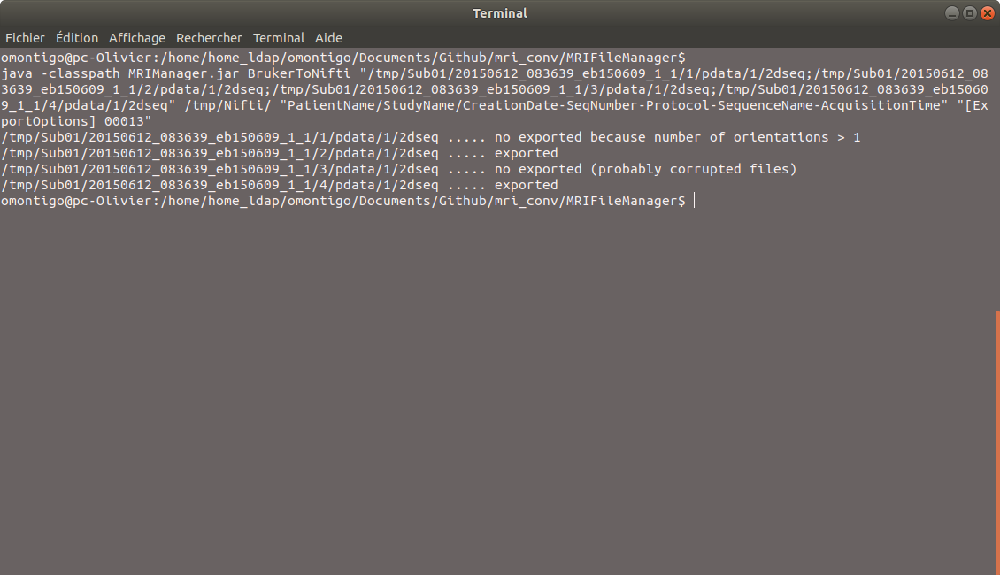
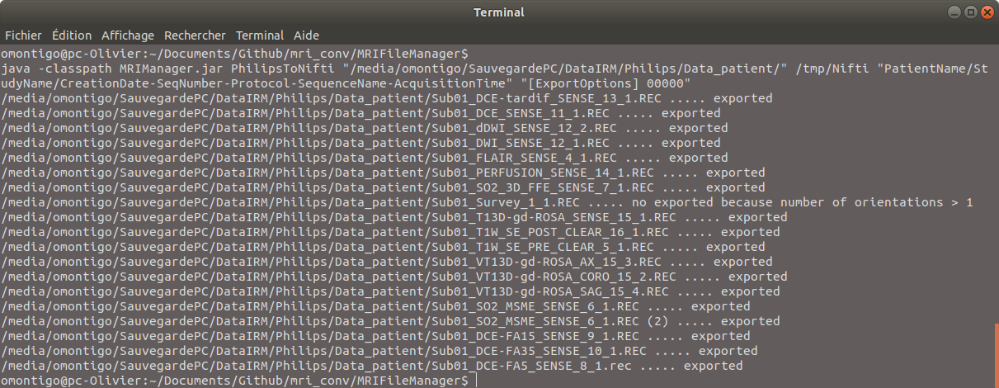
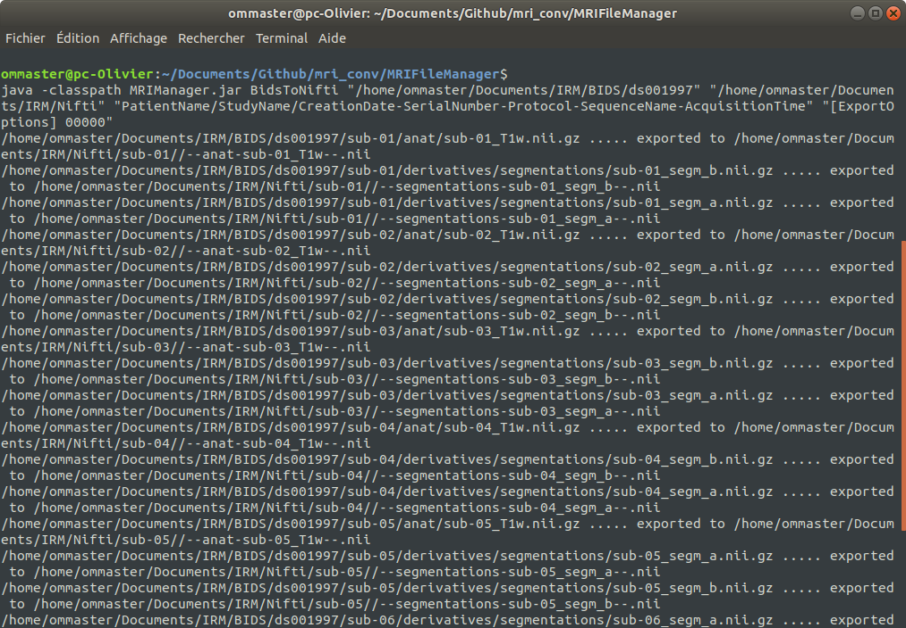
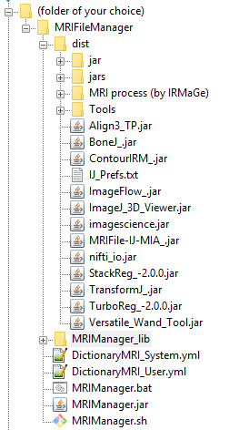

Installation - Launching of the software - ImageJ plugins - Release history
Installation
This section explains how to install MRI File Manager
Launching of the software
This section explains how to launch MRI File Manager in standalone mode (with GUI), by script (with GUI) or by script in windowless mode (without GUI).
-
In standalone mode:
You can double-click directly on the MRIManager.jar file.
But it's better to use batch file ( MRIManager.bat for Windows) or shell (MRIManager.sh for Linux and MacOS), the reasons are :
- to show error messages in the terminal
- you can force to exit software when crashed (by closing terminal)
- you can allocate memory for classes of Java
Edit the MRIManager.bat or MRIManager.sh file according to your operating system (with a simple text editor):
- Xms specifies the initial memory allocation pool for a Java virtual machine (JVM) (keep the default value 512m)java -Xms512m -Xmx4096m -jar MRIManager.jar
- Xmx specifies the maximum memory allocation pool, set the value 1/2 of the total RAM memory of your machine (for example 4096m for 8Go of RAM)
Launch the batch or shell file in a terminal:
C:\Program Files\MFM_Irmage\MRIFileManager> MRIManager.bat (Windows)wiki@ubuntu:~/MRIFileManager$ ./MRIManager.sh (Linux, Mac)
-
By script (with GUI):
You can launch MRI File Manager through another application by script with some options. In this instance, some functions are deactivated.
usage :
java -Xms512m -Xmx4096m -jar MRIManager.jar [options]
options :
'[ExportNifti] <repertory>' (1) '[ExportToMP3] <string>' (2) 'CloseAfterExport' (3) 'NoLogExport' (4) '[LookAndFeel] <string>' (5) 'NoExitSystem' (6) '[ExportOptions] <integer>' (7) '[ProjectsDir] <string>' (8)
(1)java -Xms512m -Xmx4096m -jar MRIManager.jar '[ExportNifti] C:\\Users\\Documents\\DataIRM\\NifTI'
(2)java -Xms512m -Xmx4096m -jar MRIManager.jar '[ExportToMP3] PatientName-StudyName-CreationDate-
SeqNumber-Protocol-SequenceName-AcquisitionTime'
(3)java -Xms512m -Xmx4096m -jar MRIManager.jar 'CloseAfterExport'
(4)java -Xms512m -Xmx4096m -jar MRIManager.jar 'NoLogExport'
(5)java -Xms512m -Xmx4096m -jar MRIManager.jar '[LookAndFeel] com.sun.java.swing.plaf.windows.WindowsLookAndFeel'
(6)java -Xms512m -Xmx4096m -jar MRIManager.jar 'NoExitSystem'
(7)java -Xms512m -Xmx4096m -jar MRIManager.jar '[ExportOptions] 00000'
(8)java -Xms512m -Xmx4096m -jar MRIManager.jar '[ProjectsDir] //home//user//Documents'
examples :
Python
import subprocess
subprocess.call(['java','-Xms512M','-Xmx4096M','-jar','MRIManager.jar',options])
-
By script in windowless mode (without GUI):
You can launch MRI File Manager by script without opening its GUI. In the command line, arguments are the list of files to convert, the conversion directory and the naming. An export option must also be added.
usage : (The current version of the software allows for the moment only the conversion Bruker and Philips files in windowless mode)
java -classpath MRIManager.jar BrukerToNifti "file1;file2;..." "export directory" "nifti files naming" [options]java -classpath MRIManager.jar PhilipsToNifti "file1;file2;..." "export directory" "nifti files naming" [options]java -classpath MRIManager.jar BidsToNifti "file1;file2;..." "export directory" "nifti files naming" [options]
list of files to convert : list of files or directories separated by the character ';'.
Bruker : 2dseq files (file by file) or subject files (all sequences).
Philips : *.REC files (file by file) or directory containing all the PAR/REC or XML/REC files.
Bids : directory containing 'dataset_description.json' file.
export directory : directory where the exported files should be saved
nifti files naming : only the following terms can be used : 'PatientName', 'StudyName', 'CreationDate', 'SeqNumber', 'Protocol', 'SequenceName', 'AcquisitionTime'. Use slash (/) to indicate the directory and a separating charactere in the name of file ('-' or '_' character advised)
[options] : [ExportOptions] 00000 (put 00013 if you want generate bvecs/bvals files for diffusion sequences)
Examples (Click on the image to enlarge) Bruker Philips
with subject files

with 2dseq files

with directory containing all the PAR/REC or XML/REC files

with *.REC files

Bids

ImageJ plugins
For ImageJ users, it's possible to install his plugins in the 'dist' folder of MRI File Manager

Release history
19/11/2019 : Version 19.6.2a
Features added:
- Export options : 2 fields are added for the naming option of Nifti files : SerialNumber and AcquisitionDate.
- Bids : possibility to launch MRI File Manager by script in windowless mode (see section 'Launching of the software' in this page).
- Bruker: images with multi-orientation (axial, coronal,sagittal) can now be exported as Nifti.
06/09/2019 : Version 19.6.1a
Features added:
- Philips : possibility to launch MRI File Manager by script in windowless mode (see section 'Launching of the software' in this page).
Bug fixed:
- Philips: image order problem in some sequences 5D fixed.
29/08/2019 : Version 19.6.0a
Features added:
- Bruker : possibility to launch MRI File Manager by script in windowless mode (see section 'Launching of the software' in this page).
- Bids : menus "see 'dataset_description.json' file" and "see 'participants.tsv' file" added in popup menu.
Bug fixed:
- Dicom Philips: image order problem in some sequences 5D fixed.
09/08/2019 : Version 19.5.6a
Bug fixed:
- Bids : some bugs who crashed Populse_mia fixed.
09/08/2019 : Version 19.5.5a
Others:
- Bids : following the Bids development, now possibility to export Bids structures to Nifti .
09/07/2019 : Version 19.5.4b
Features added:
- Bids : following the Bids development(still in trial version).
05/07/2019 : Version 19.5.3b
Features added:
- Bids (Brain Imaging Data Structure): new IRM file format introduced in the software (still in trial version).
02/07/2019 : Version 19.4.3b
Bug fixed:
- DICOM: problem reading some Dicom files.
02/07/2019 : Version 19.4.3a
Features added :
- DICOM (Philips): possibility to generate bvecs/bvals files for reading of diffusion in MRtrix or FSL.
Others:
- best display of JSON text in log
- best display of no-isotropic images in thumbnail list
25/06/2019 : Version 19.3.3a
Bugs fixed:
- Bruker : affine transformation problem of some Bruker sequences fixed.
- NIFTI : problem reading some Nifti files (64 bits float) fixed.
- Philips : problem reading when sequences had same number serial, protocol, acquisition time ... fixed.
21/06/2019 : Version 19.3.2a
Bugs fixed:
- NIFTI : problem reading some Nifti files (16 bits unsigned) fixed.
- Philips : problem reading when files had lowercase extensions (*.rec, *.par) fixed.
Features added :
- Philips : possibility to generate bvecs/bvals files for reading of diffusion in MRtrix.
12/06/2019 : Version 19.3.1a
Bugs fixed:
- DICOM : problem reading Dicom files without rescale slope and intercept.
06/06/2019 : Version 19.3.0a
Bugs fixed:
- DICOM : dimension reversed for some Dicom.
- problem of the dialogue window 'Loading thumbnail ...' that did not always close resolved
Features added :
- Bruker : possibility to generate bvecs/bvals files for reading of diffusion by MRtrix
(see page 'Documentation', section 'Set options')
- add option [ProjectsDir] for the script (see page 'Installation', section 'Launching of the software')
Others:
- Json Irmage : now, all parameters that have floating or integer values (same single) are presented as an array (list of list)
- better management of items in the basket
- exit code = 100 (for populse_mia project only)
04/04/2019 : Version 19.2.3a
Bugs fixed:
- DICOM : for some Dicomdir files, anonymization did not work.
- Nifti : anonymization did not work
- Bruker : "Sequence Name" tag more complete for parametric images
03/04/2019 : Version 19.2.2a
Bugs fixed:
- DICOM : for some Dicom files, anonymization did not work.
- DICOM : after the ImageJ upgrade to 1.52n, some DICOM images were not displayed in the 'thumbnails' area.
Others:
- ImageJ update to 1.52n
04/03/2019 : Version 19.2.1a
Bugs fixed:
- DICOM : problems opening Dicom files which included the same serial number.
- PHILIPS : problem opening DwiSE images.
Features added :
- DICOM : add in "Preference" menu the option "simplified view for DICOMDIR" for faster reading.
Others:
- a new column 'Note' added in the 'Data browser' table.
- a new column 'Serial Number' added in the 'MRI sequence' table.
22/01/2019 : Version 19.0.0a
Bugs fixed:
- DICOM : problem opening Dicom files which are located in a root directory of a disk.
11/12/2018 : Version 18.2.9a
Bugs fixed:
- PHILIPS : under Linux, display problem for Xml/Rec files.
Others:
- 'DataAnonymized' tag modified in json file (add 'Description, 'format', ...).
11/12/2018 : Version 18.2.8a
Bugs fixed:
- better research of Nifti files.
Features added :
- options to anonymize MRI datas -> 'DataAnonymized' tag added in json file (value = no or yes).
- BRUKER : possibility to export the parametric images separatly (see 'File'-> export -> Option export' menu).
04/12/2018 : Version 18.1.8a
Bugs fixed:
- problem with export to Nifti (Populse_MIA)
- problem with defaut directory for the exported data.
Others:
- the software version is displayed at the top of the sofwtare window.
- DictionaryMRI_System.yml is modified ('Patient Weight', type = string instead float)
- PHILIPS: 'Patient Sex', 'Patient Weight', 'Patient BirthDate' tags added.